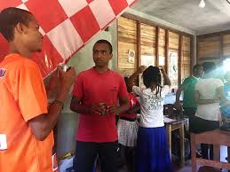

About English courses
We came here in Mahanoro on 07th of january 2019. Since then we started learning English. Learning English is quite hard and we also started from scrach so it is extremely tough for us. There are 20 students at onja and we have really nice teachers.
We learn four(4)subjects at school:
- Speaking
- Listening
- Reading and Use of english
-
Writing
-
Speaking
Speaking is the most difficult among them because you have to speak clearly so that it is easy for people to understand you. We have time 15min everyday to talk in RP accent,we call it as
TEA TIME.The teachers set a topic so we can discuss about it during 15min. The reason why we do this is to improve our way of speaking and to make our accent better. -
Listening
Listeng is quite hard too, because you have to listen to people who have many different kind of accents. You need to listen to them carefully so that you can understand what they are saying.
-
Reading and Use of english
This is hard too, but it depends on how well you know about voccabulary and fix expression.
-
Writing
Writing is not really tough but it needs to be good structure, apropriate style and well organized.
-